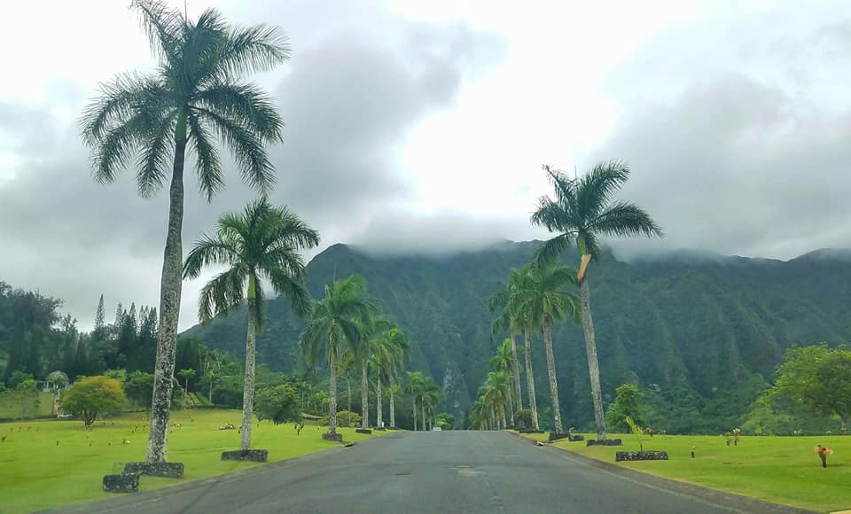

Nāpali Coast State Wilderness Park lies in the northwest of Kauai Island, Hawaii. It’s known for its towering pali, or sea cliffs, punctuated by narrow valleys, streams and cascading waterfalls. The Kalalau Trail is a steep footpath running through the park, between nearby Ke’e Beach and sandy Kalalau Beach. It cuts through 5 valleys, including the Hanakoa Valley, with its native plants and old agricultural terraces